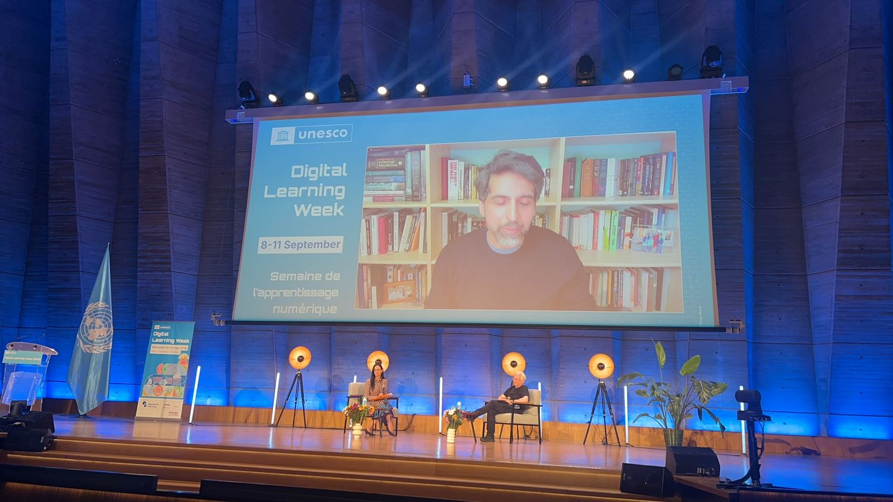
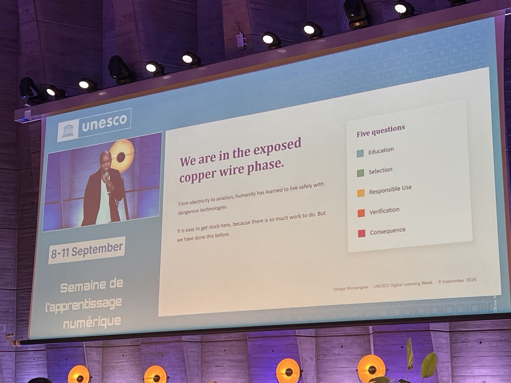
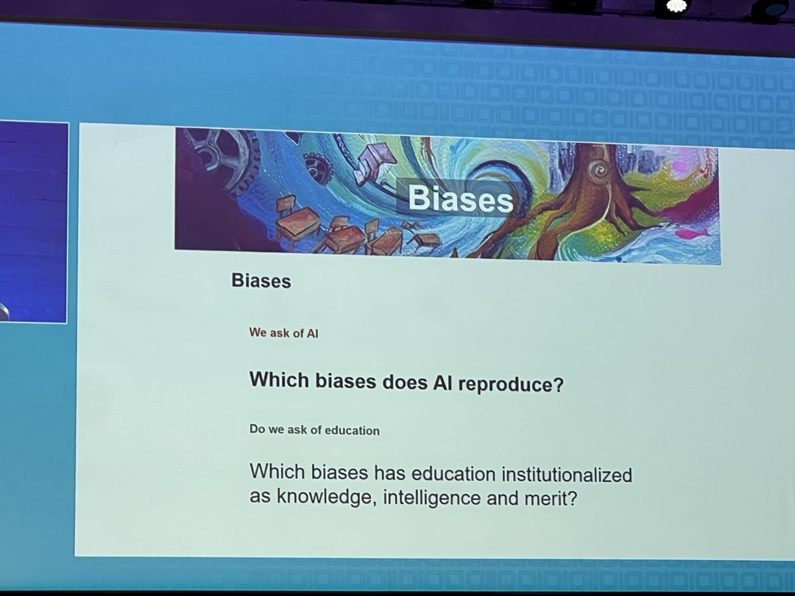

AI 時代
怎樣學、怎樣教、
怎樣治理？
給香港校長與教師的 20 分鐘分享
全程約 20 分鐘，三個板塊各約 5 分鐘，最後 3 分鐘講香港。
三個問題，結論先行
AI 介入之後，
學生學到了甚麼？
AI 進入課堂，
教師需要哪些支持？
學校需要
哪些公共條件？
對校長說話的重點：這 20 分鐘給的是判斷方法，技術細節從簡。
四天，一個被反覆追問的問題

共同通過部長聲明
Facts ｜ Frictions ｜ Frontiers
事實：問學習效果與技術主張的依據。
摩擦：問 AI 與課程、評估、師生關係在哪些環節不相容。
前沿：問哪些新的學習環境與公共安排正在出現。
可補一句：正式報告的入選與報名參會是兩套安排，入選議程不等於 UNESCO 對項目成效的認證。這點在後面講 CocoRobo 那一頁也要說清楚。
AI 介入之後，
學生學到了甚麼？
文章流暢度提高，
追問論證時未能回應
她允許學生用 AI 梳理想法、組織論證。很快有學生發現，系統也能承擔更多寫作工作。交上來的文字更流暢，但當她追問論證時，並非所有學生都能解釋。
開幕日圓桌討論，一位與會教師的現場敘述要點：成品從來不足以說明學習過程，生成式 AI 只是把這件事變得更難判斷。一篇結構完整的文章，可能來自學生獨立思考、人機共同修改，也可能主要由系統生成。單看最終文本無法區分。
兩種「卸載」，
只有一種可以移交
認知卸載
Cognitive offloading
讓工具檢查拼寫、代算、代查資料。
省去的是執行。
元認知卸載
Metacognitive offloading
把「是否已經理解」這一判斷一併移交。
省去的是學習本身。
補一句避免誤解：這不表示困難越多越好。含混指令、重複錄入、繁瑣操作只是額外負擔；選擇證據、解釋理由、嘗試後修正才構成學習。把所有過程都做得輕鬆，和把所有過程都留給學生獨自承擔，同樣缺少教學判斷。
成品不足以說明學習，
另需兩項證據
作品
完成了哪些內容
表達是否清楚
過程
為何這樣修改
怎樣判斷證據
獨立表現
能否解釋自己的選擇
換一項任務是否仍能完成
實務建議：在校本的科組會議上，把「這一課我們憑甚麼判斷學生學到了」寫成一句話，再回頭看手上的材料屬於哪一欄。
同一個項目，兩個科目，兩個結論
科特迪瓦與 EvidenceB 的基礎能力補習項目（自適應練習）。數字取自世界銀行 2026 年 2 月項目說明：25 所職業教育機構、22 周實施期、雙重差分分析。
不是隨機對照試驗。實際使用者與未使用者本身可能存在差異，子樣本的改善不能直接視為因果。
結論句：換一個科目、換一個分析對象，結論就變。「AI 提高成績」這句話無法整句搬運。
Khan 自己也承認：早期版本裏不少學生沒有按預期參與，部分學生想直接要答案，面對引導式回應會失去耐心。
支持充分，學習工作仍由學生承擔
四步的順序是刻意的。
自選文本
學生自行選定一篇新聞
先獨立寫
短影片改編腳本，AI 尚未介入
再用 AI 修改
小組討論修改方向
AI 使用日記
逐條記下採納或拒絕的理由
最終影片以外的編輯決定：事實怎樣核實、建議為何被採用或拒絕、發佈責任由誰承擔。
毛里求斯的翻譯課：先自行翻譯，再與 AI 譯文比對。北京王府的科學探究：學生重新決定研究問題、依實物實驗修訂方法。
使用日記不需要平台支援，一張表格就夠，老師週一就能用。
設備隨規模改善，
學生的決定空間隨之收窄
- ·低成本、可拆解的環境傳感器
- ·學生要自己設計、製造、組裝
- ·損壞後須自行拆解、維修與調試
- ·設備更穩固、部署更方便
- ·但學生拆開、修理、作決定的空間也可能縮小
- ·器材得以保留，探究未必
推廣時須明確說明：哪些決定仍然留給學生。
同場一個細節值得提：該團隊裏年齡較小、長期參與項目的學生，在指導剛接觸項目的大學生。專業經驗在活動中形成，不應僅憑年齡預先分配誰能教誰。
AI 進了課堂，
教師需要哪些支持？
工作可以重新分配，
專業判斷的歸屬未有共識
讓 AI 承擔更多知識教學，
教師轉向數據分析、個別指導與情感支持。
教師仍需理解自己所教的學科，
才能引發學生對這一科的興趣，並幫助他們理解知識。
同場巴西學校的經驗：平台無法取代教學組織的必要性：先授課還是先用平台、集體學習與個人練習怎樣銜接、放到課後又會遇到家庭設備與網絡差異。
186 份問卷顯示準備感提高，
課堂行為未必隨之改變
培訓前後配對問卷 186 份，參與者的自我準備感提高。
自願參與 · 自我報告
沒有對照組 · 缺少後續的學生數據
教師會用 AI 製作或簡化教材，
但更深入的教學重新設計，受組織條件限制。
西班牙團隊的跨國需求調查也顯示：小學與中學的關切不同，兒童保護、學術誠信和評估要分別回應，無法用同一份指引一併處理。
要說的重點：自我準備感確實提高，但課堂是否改變仍缺證據，報告者自己也這樣講。下一頁是學校該補的部分。
培訓之後，四項條件須由學校補足
規則
哪些用途允許、哪些不允許、學術誠信如何處理，以文字訂明，不依賴口頭提醒。
工具
培訓所用的工具回校後是否仍可使用：由誰付費、誰維護、誰開設帳號。
時間
備課與試用的時間從何而來，不應全部落在課後與假期。
指導
出現問題時由誰處理，誰有權決定暫停使用。
學校則要讓教師有條件檢驗並修改所學。
（若時間緊，此頁與上頁合講，砍掉第 7 頁。）
自評服務於教師反思，
不作機構評分之用
生成式 AI 素養
課程與學習設計
教學與學習
評估
教師本人如何使用 AI，和教師如何支持學生使用 AI。前者是工具熟練度，後者是教學責任。
框架假設了學校已有一定的使用指引。自評工具無法代替學校自己建立的倫理與教學安排。
這一頁最要緊的一句是「不是績效考核」。如果學校把自評拿去做考績，老師就會填漂亮的答案，工具當場失效。
省、市、校三級，各自提供不同條件
廣東省 2025 年 4 月印發教師素養、學生素養、課程綱要三份文件：分別訂明教師素養、學習內容與課程組織，三者配套。
「深教 AI」匯集 10 個經審核的學習平台；三屆教師雲端應用開發大賽吸引 2000 多名教師參與。
學校自己的評估標準與教學任務。報告介紹的是教師設計活動所需的各項條件。
那兩句免責（數字不是效果指標、入選不等於認證）一定要講出口。香港的校長對這種分寸很敏感，講了反而更可信。
教師參與制定
課堂觀察的指標
教師既是使用者，亦參與訂定課堂觀察所依據的指標。集團另以自學微課、集中培訓、入校指導和技術支援協助使用與改進。
另一個可借用的例子：寶安紅樹林外國語小學的英語口語 TASK 實踐，把任務設計、口語練習與評估、標準匹配、數據回饋分配給不同智能體（agent），但由老師先確定教學任務，再安排 AI 的角色。
三項可直接沿用的合作做法
從共同的教學問題出發
由教師參與界定合作的目標與待回答的問題，使工具開發、研究和專業學習圍繞同一個教學需要。
連接創作、證據與重新設計
教師創作和試用的過程要接上證據收集，研究發現再回到下一輪修改。作品完成之後，設計工作還要繼續。
為「兩次活動之間」
提供經費
資源須覆蓋跨方協調、技術支援與教師的時間，支持集中交流之後的課堂試用與設計修訂。
背景：對深圳坪山三個教師群體做了 12 個月跟蹤，用設計作品、修訂、平台記錄、問卷和訪談分析持續參與的差異。CocoRobo 提供工具與技術支持，高校參與研究，教育部門組織地方支持，學校與老師提出需求並回饋課堂使用情況。
AI 進了教育，
需要哪些公共條件？
屬於校長、辦學團體和教育當局。
八項行動方向，
無法簡化為「負責任地使用 AI」
第 04 條裏「必要時暫停或停止」是很硬的一句，通常被略過。
系統推斷所得的數據，
同屬學校治理範圍
學生提交的答案、作業、登入記錄。
現行的個人資料保護制度主要針對這一類。
系統生成的、關於該名學生的能力判斷、風險預測和學習畫像。
部長聲明特別指出：現行保護未必涵蓋。
一個「能力不足」的標籤，若持續影響系統向該學生推送的任務，錯誤會被後續安排一層層放大。學生與家長可能始終不知悉該標籤的存在。
校長可直接向供應商提出的三個問題：這個判斷依據甚麼？它怎樣影響學生接下來看到的內容？家長要求更正時流程是甚麼？
採購時評估過的系統，
數月後未必維持原狀
- !模型更新時界面可能不變，系統行為已經改變
- ·供應商應報告必要變化
- ·學校要保留使用後複核、數據遷移與更換系統的條件
- !隨平台升級加入的 AI 功能，即使未產生新的付款，同樣須納入檢查
- ·網絡、設備、本地化
- ·教師發展、數據管理
- ·網絡安全、持續更新
- !退出成本：停用之後，數據如何遷出，課程如何延續
早期低價也不能代替對長期成本的估算。
這六份是公開諮詢材料，不是已定案的法規。
另一份（學習者安全，Asare）提出：禁止、暫緩、試點、附帶保障地允許、支持、擴大、停止。若試點不能限定範圍、保護數據、支持老師、評估結果和受理問題，叫它「試點」並不能免除責任。
「我們還在裸露銅線的階段」

用電和航空都經歷過這個階段。後來的安全由公共教育、專業訓練、檢驗與責任安排共同建立；使用者對技術的信心本身不構成安全。
她並將模型選擇與本地能力關聯：教育系統需要能理解、調整和評估模型的人。
這個比喻現場反應很好，可以直接引用英文原句：“We are in the exposed copper wire phase.”
香港藍圖已提出的要求
培育兼具數字素養
與人文關懷的人才
《中小學人工智能素養學習架構》；小學資訊與創新科技課程框架；「人工智能＋課程」與《中小學應用人工智能教學指南》。
加強教師培訓，
推動教育數字轉型
訂定教師專業培訓要求；提供分層式、多元化的專業發展活動。
優化基建配套，
建設智慧校園
校園網絡、設備與平台的配套建設。
推動跨界別協作，
構建數字教育生態
匯聚專業組織與持份者，包括與內地及國際的交流。
每三年 30 小時 教師在每個持續專業發展周期內，須完成不少於 30 小時數字教育培訓。
一次過 50 萬元 三年期「『智』啟學教」撥款計劃向公帑資助學校提供，用於校本 AI 教育規劃與教師培訓。
2026／27 學年 小學資訊與創新科技課程框架推出。優質教育基金另預留 20 億元。
相關文件：教育局通告第 11／2026 號；執行摘要由課程發展議會編訂。另兩份附篇為《中小學人工智能素養學習架構》與《中小學應用人工智能教學指南》。初中人工智能課程單元早在 2023 年推出，2023／24 學年起採用，10 至 14 小時。
查證狀況：本材料製作環境無法連上 edb.gov.hk / info.gov.hk（出口代理封鎖），以上據多家獨立報道交叉核對；正式引用前請核對教育局通告第 11／2026 號原文。
藍圖已覆蓋的方向，
與學校須自行補足的部分
- ✓教師能動性 四大重點之一是加強教師培訓；每三年持續專業發展周期內不少於 30 小時數字教育培訓
- ✓學生素養 《中小學人工智能素養學習架構》；2026／27 學年推出小學資訊與創新科技課程框架
- ✓教學指引 《中小學應用人工智能教學指南》
- ✓資源 優質教育基金預留 20 億元；三年期「『智』啟學教」撥款計劃
- ·推斷數據 平台對學生作了哪些預測與畫像，誰可查閱、可否更正
- ·更新之後 模型更換時由誰通知學校，學校依據甚麼複核
- ·完整成本 撥款期結束之後，由誰承擔運行、維護與更新的費用
- ·可解釋與申訴 AI 評分出錯時，學生和家長向誰申訴
右欄那四條屬於採購合約與校本政策的層面，政策文件本來就不會替單一學校寫進合約條款。所以藍圖裏沒有它們，這四條只能由學校自己補。
政策事實的查證狀況見上一頁備註。
評估一個 AI 系統
可先提出的七個問題
若現場有 Q&A，用第 04 題開場最容易接上校長的實際處境。
最後一項追問，
指向教育自身
AI 再生產了哪些偏見？
教育又把哪些偏見制度化成了知識、智力與功績的判斷標準？
她同時提出「有意義的選擇」：師生應能參與、退出或採用替代方式，而不因此受到污名或不利對待。若不使用某個平台便無法取得課程回饋、無法完成規定任務，這種選擇並不成立。

可補一句：一個系統即使準確複製了現有的作文評分規則，也不能自動證明那套規則充分體現了學生的理解和思想。技術執行的準確性與教育標準的合理性，要分開判斷。
保留老師判斷，也不等於所有人的判斷都自然合理。專業意見同樣要有依據，也要能被質疑和改進。
線上版與 PDF 下載
手機上可直接翻頁，內容與現場這一份相同。tonyxinvip.github.io/slides/unesco-2026/
29 頁 · 16:9 · 約 2 MB，可轉發、可列印。…／unesco-2026/unesco-dlw2026-hk.pdf
講完上一頁的「謝謝各位」之後翻到這裏，讓它一直亮着。校長要掃碼通常是在提問的空檔，不是在講的時候。
可以說一句：左邊是線上版，手機上直接翻；右邊是 PDF，可以轉給同事。
資料來源與說明
會議 第四屆 UNESCO 數字學習周，2026 年 9 月 8–11 日，巴黎 UNESCO 總部。主題 Education in the age of AI: Facts ｜ Frictions ｜ Frontiers。人數採用會議同期官方報道。
文件 部長聲明《在 AI 時代維護教育作為共同利益》；全球諮詢「1＋6」（一份治理討論文件與六份受委託背景論文，屬公開諮詢材料，非已定案法規）；文集《房間裏的算法》（26 篇多作者思考文章）。
現場報告 教師能動性專題（西班牙、德國、科特迪瓦、意大利與 CocoRobo）；個性化學習專題；學習、認知與人類能動性專題；UNESCO AI 能力框架實踐專題；國家政策專題；高等教育全體會議；AI 準備度策略實驗室。
會外核驗 科特迪瓦項目的效應量取自世界銀行 2026 年 2 月項目說明（25 所職業教育機構、22 周、雙重差分），非隨機對照試驗。
香港政策（第 24–25 頁） 《中小學數字教育發展藍圖》，教育局 2026 年 6 月 17 日公布；教育局通告第 11／2026 號；執行摘要由課程發展議會編訂。附篇兩份：《中小學人工智能素養學習架構》、《中小學應用人工智能教學指南》。本材料製作環境無法連上教育局網站，以上據多家獨立報道交叉核對；正式引用前請核對通告原文。
照片 由參會者現場拍攝提供。投影片內容版權屬各報告者。
分寸說明 正式報告的入選與報名參會是兩套安排。入選議程說明的是分享的主題與位置，不構成 UNESCO 對任何項目、產品或成效的認證。本場分享中涉及建設規模與參與人次的數字，反映的是建設和參與情況，不是學習效果指標。
全文版（約 1.8 萬字、17 圖 3 表、40 條參考）為本 deck 的來源文件。